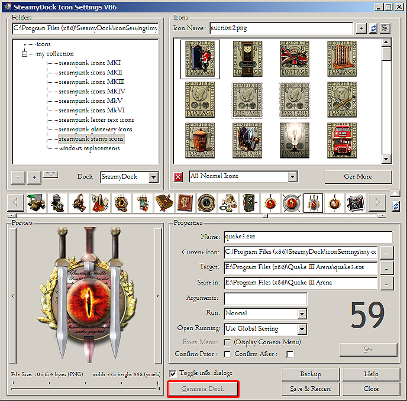
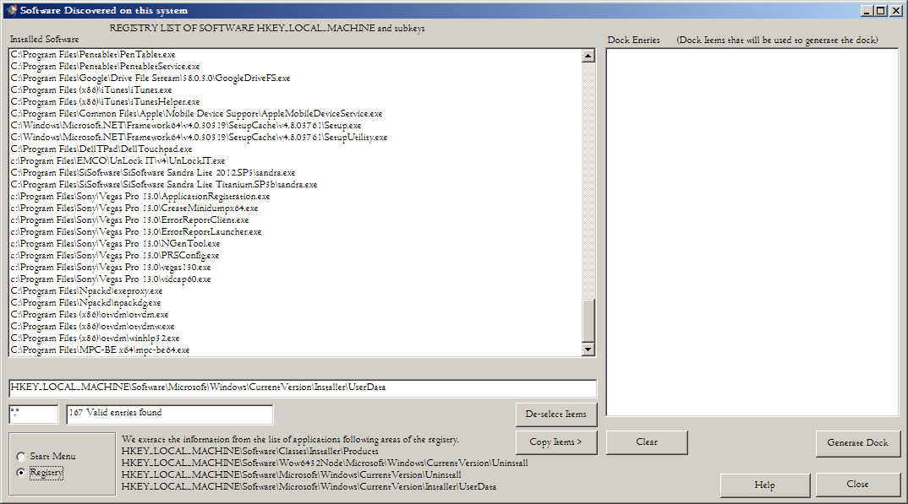
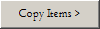
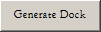
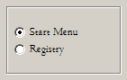
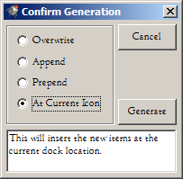

SteamyDock Icon Generation Tool
This utility is used to generate a dock from scratch. It can add icons
to the dock in bulk. The source of the data are the registry uninstall
area and the start menu. These are the only places where applications
are 'registered' with the o/s. Note: many apps do not do any form of
registering, they simply exist on a hard drive somewhere. This
application will NOT find those. Understand that this is a limitation
of Windows itself. Anyone can copy an .exe to the file system on the
hard drive but Windows
itself only knows the existence of an app if the program explicitily
makes itself known via a registry or start menu entry. Windows becomes
aware of the program when it is running but immediately
afterwards, it forgets.

Fig 01. The SteamyDock/Rocketdock Enhanced Setting Utility.
When the 'generate' button on the Icon Settings screen is pressed the Dock Generation Utility will pop up.

Fig 02. The SteamyDock Icon Generation Tool
You will see this isn't my most attractive utility but as I know
you will only view it once or twice, I have not spent a lot of time on
the look and
feel.
This utility will automatically generate a complete dock from the
applications and programs installed upon your system. However, if used
incorrectly it will also wipe your current dock. Please ensure you understand
what it is for and what it does before you attempt to use it. At the
final point of operation there will be a confirmation dialog that will
warn you and ask whether you really want to continue.
The SteamyDock Icon Generation Tool is simple in operation. On the
left is a list of software that
you have installed on your system. A single click on each app you wish
to appear in the dock, another click to deselect. You may select as
many as you wish. On the right is an empty box that will contain any
items that you want to appear in
your dock. That is the Approved Dock Entries Box.

Fig 03. Copy Items Button
When you have selected the programs you want, press
the "Copy Items" button. All of your choices will be placed upon the
list on the right hand side. Those selected apps will comprise your new
dock, you can add them to the existing dock or create a new dock from
scratch. You can also use the left mouse click and drag operation to drag selected programs to the target list box.

Fig 04. Generate Dock Button
When you are content with your selection then press the "Generate Dock" button.
Fig 05a. Clear Button
The other buttons are self-explanatory, the clear button clears the right hand
dock items list if you are unhappy with your choice so far.
Fig 05b. Clear Button
The deselect button clears all your selection in the software list above.

Fig 06. Selecting Source using Radio Buttons
On the far left there are two radio buttons, each selects a different
source for a list of programs that you have installed on your system.
The "start menu" button provides access to the
applications that have been added to the Windows start menu. This will
show a list of all apps that are installed on the system and registered
with the Windows start menu. The second option extracts
program information from the registry. In the creation of this tool we
have discovered (and been surprised) as to how
little information about installed applications is maintained by
Windows. There is no central list of installed apps. As
a result, this program will only find the following apps:
1. Apps that have a shortcut entry to the start menu
2. Apps that have an entry in the uninstall section of the registry.
Background: If any of your
installed apps have
just been simply copied or extracted to the system's hard drive
then the Windows system itself does not know about it. It can run any
app but prior to that program it
has no knowledge about the app unless data has been written to the
registry. If the program just runs without any installation, that app
will
probably not be found in the registry nor in the start menu. To get
round this limitation I could add extra
functionality to
trawl the hard drive for identified applications but that would be
a significant task and would probably result in a separate product all
by itself. For the moment
the program data section of the
start menu is currently the best source of data for installed apps.
There is a Help button and Close button. The help button shows you this
document. The close button simply closes the auto generation tool.
When you press "Generate Dock" a dialog will pop up to ask you how you want to populate your dock.

Fig 07. Dock Confirmation Prior to Generation
By default the dock will Insert your chosen entries at the current
point in the dock. The other choices Append or Prepend the new entries
to the existing dock. The Overwrite option is a dangerous one as you
will lose all the current dock entries if you choose it. Choose with care, the choice is yours.
A final confirmation pop up will ask you if you really want to do this.
The utility will take a backup of the current dock. A message box will
pop up letting you know this has taken place.
The dock will restart and the new icons will be shown in the dock.
If you accidentally destroy your old dock and want to recover it, be
aware that the Enhanced Icon Settings Utility makes a backup of
the dock's configuration file, storing it in the tool's BACKUP
sub-folder. Once you have identified which configuration file you want
to restore, it is possible to revert to that older version using
the Icon Settings Utility's restore facility. See the help for the
Enhanced Icons Settings Utility to learn how to do that.
Icons
When the dock is generated you may notice a few unexpected icons in the
dock. This because we do not currently extract any embedded icon from
an EXE. Instead, when the
user's list of apps is processed the program will try to identify an
appropriate icon to use. It does this through the use of an CSV file
containing lists of applications, named appIdent.csv that contains two
factors used to identify an app. if the app corresponds to a known
app. then it
will be assigned an icon. That list is limited and only contains a few
dozen major applications. If the app is not found then it will be
assigned a default 'link' icon. When I have a good and reliable method
for extracting an embedded icon then I will implement an option to use
embedded icons.